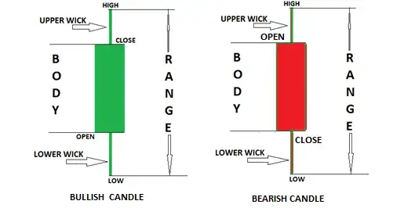
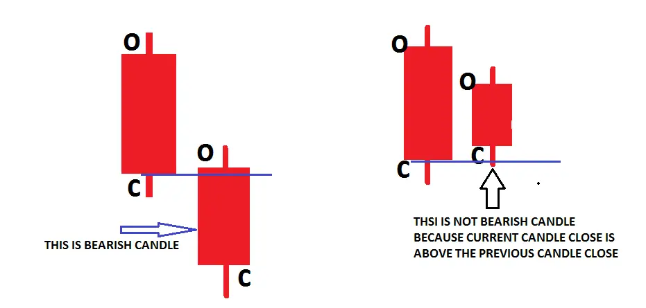
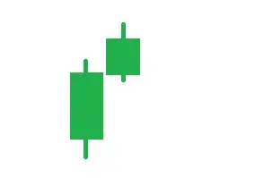
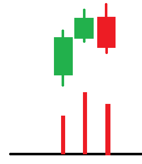
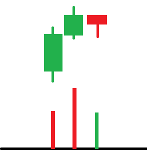

In this article, I am going to discuss How to Study Candlestick in Trading. As part of this article, we will discuss the following three important pointers in detail related to Candlestick in Trading.
What is a candlestick?The candlesticks are the reflections of what buyers and sellers are doing. To what extent do they move the price and the strength behind the move? CANDLES TELL YOU who is in control but do not tell you about the strength of buyer or sellers behind the move; candle with volume shows that
Open price tells us the balance between buyers and sellers at the opening of that period. The opening value is the first trade of the day. After the traders have time to review the markets overnight, the open represents the desired position of investors to begin the day. The change from the previous close to the open reflects new sentiments. Also, institutions looking to accumulate (or distribute) positions often place orders at the open because the open trade is often the largest, most liquid trade of the day. In this way, the opening might be one of the best times to accumulate/ distribute a large stock volume while minimizing the impact on the stock’s price.
The High:The high is the highest point the stock traded during the session. The high is the furthest point the bulls were able to push the stock higher before sellers regained control to push the stock back down. The high represents a stronghold for sellers and a resistance area to buyers. There is one exception: when the stock closes on the high, it does not encounter any real resistance from the sellers. The buyers just ran out of time.
The Low:The low is the lowest point the stock traded during the session. The low is the furthest point the bears were able to force down the stock before buyers regained control to push the stock up. The low represents an area where enough demand exists to prevent the price from lowering. The exception is when the security closes on the low. When the stock closed at the low, it did not encounter buying support. Rather, the bulls were saved by the closing bell of the session.
The Close:Close price tells us where the balance point was at the end of the period. The close is the last price agreed upon between buyers and sellers, ending the trading session. The close is the market’s final evaluation. A lot can happen between one close and the next close. The close represents investors’ sentiments and convictions of investors at the end of the day. It is the position investors desire to hold after-hours when investors cannot trade with liquidity until the next session opens. The closing price is the first (often the only) price most investors desire to know.
The Change:The change is the difference between close and close. The difference in the closing value one day versus the closing value the next. When this difference is positive, it tells us that demand outweighs supply. When this difference is negative, it tells us that supply is increasing beyond demand. The change is perhaps the most sought-after piece of financial data.
The Range:The range is the spread of values within which the stock trades throughout the day. The range spans between the bar’s highest point and the same bar’s lowest point. It is measured from the top of the bar, where resistance is low and support comes in. The size of the range gives us important information about how easily demand can move the s took up or supply forces the price down. The wider the range, the easier it is for the forces of supply and demand to move the stock price.
Bullish CANDLESTICKThis is nothing, but when the CURRENT CANDLE closes, it is ABOVE the previous candle’s close.
 Bearish CANDLESTICK
Bearish CANDLESTICK
When the CURRENT close is BELOW the previous candle close
With the proper understanding of CANDLESTICK, you can predict what is about to happen in the near future
#Pro Tips: we (retailers) can’t move the market, so every candle shows what smart money is trying
to show. So their move trap or genuine is only validated by volume
#Pro Tips: CANDLESTICK shows half of the information, and the other half of the information is
shown by the volume
Example

WHAT IS TELLING US?
SENIMATE = BULLISH, 2 consecutive higher close candles. Let’s add volume to this candle
2nd candle range is smaller than 1st candle
2nd candle volume greater than 1st candle
Think why the volume is greater than 1st candle.
Let me explain to you.
NARROW SPREAD CANDLE WITH HIGH VOLUME. Two possible explanations
Let’s understand the chart.
If the next bar is down, closing near its lows, this confirms the professional selling
A low volume down candle close to the middle or top shows that smart money testing supply and no more supply available 2nd candle was the buyer’s volume if the next candle closes above the current candle
Studying candlestick patterns is a critical skill in technical analysis that can provide insights into market sentiment and potential price movements. Here’s a step-by-step approach to learning how to read and interpret candlestick patterns:
Candlestick patterns can be a powerful tool in a trader’s arsenal, offering valuable insights into market psychology. However, they should be part of a comprehensive trading strategy with sound risk management practices and continual education.
In the next Page, I will discuss Candlestick Analysis in Trading. I try to explain How to Study Candlestick in Trading. I hope you enjoy this How to Study Candlestick in Trading.